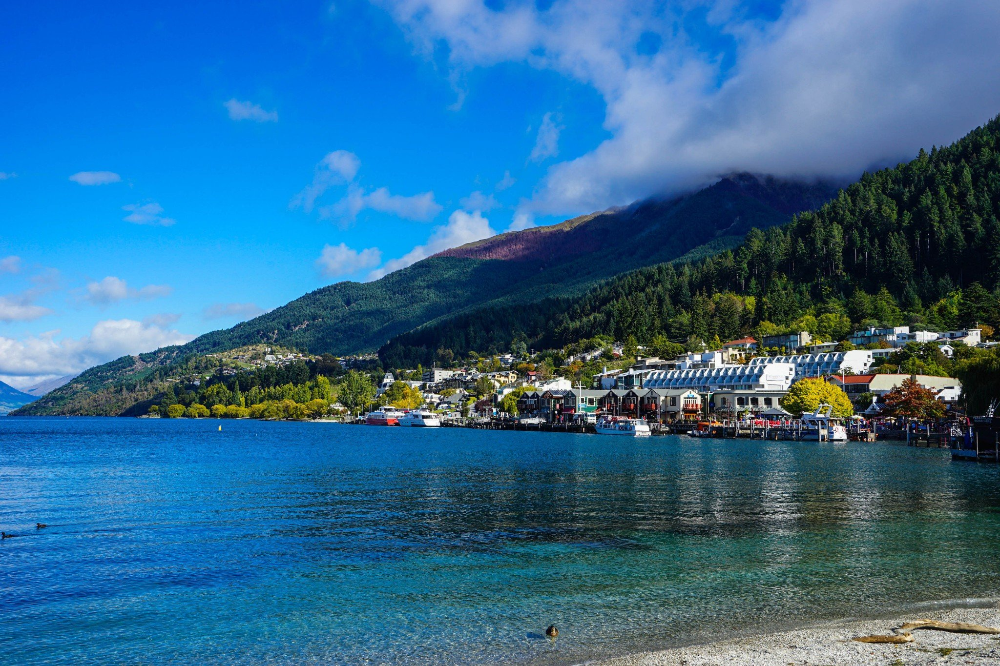
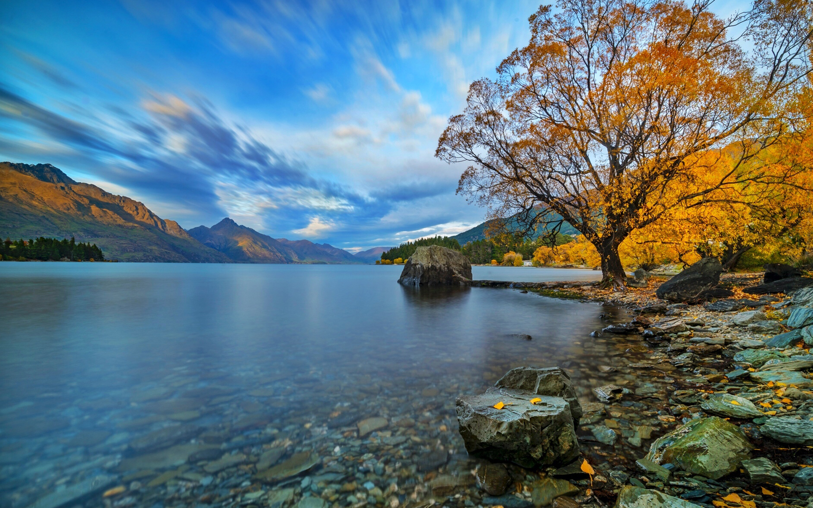

Queenstown
introduction
The town is built around an inlet called Queenstown Bay on Lake Wakatipu, a long, thin, Z-shaped lake formed by glacial processes, and has views of nearby mountains such as The Remarkables, Cecil Peak, Walter Peak and just above the town, Ben Lomond and Queenstown Hill.
The Queenstown-Lakes District has a land area of 8,704.97 square kilometres (3,361.01 sq mi) not counting its inland lakes Hāwea, Wakatipu, and Wānaka. The region has an estimated resident population of 48,300 (June 2021) .
Tourist activities include:
- Ben Lomond, a nearby mountain for a view of the area The gondola known as Skyline Queenstown
- ascends Bob's Peak on Ben Lomond Kiwi Birdlife Park
- and Paradise for the paradise duck (Tadorna variegata) Walk, mountain bike, or run The Queenstown Trail Skippers Road
- Scenic flights Cecil Peak Station, on the western shore of Lake Wakatipu, a 34,000-acre working sheep and beef farm.

Queenstown
Queenstown got its name because the colonists believed that the beauty of the scenery should belong to the Queen, hence the name Queenstown.
Sports and recreation：
- Queenstown Events Centre and stadium
- Paragliding or Hang Gliding
- Aerobatics with the Wakatipu Aero Clubat Queenstown Airport at Frankton
- Golf at Millbrook Resort, Jack's Point, or Queenstown Golf Club
Queenstown